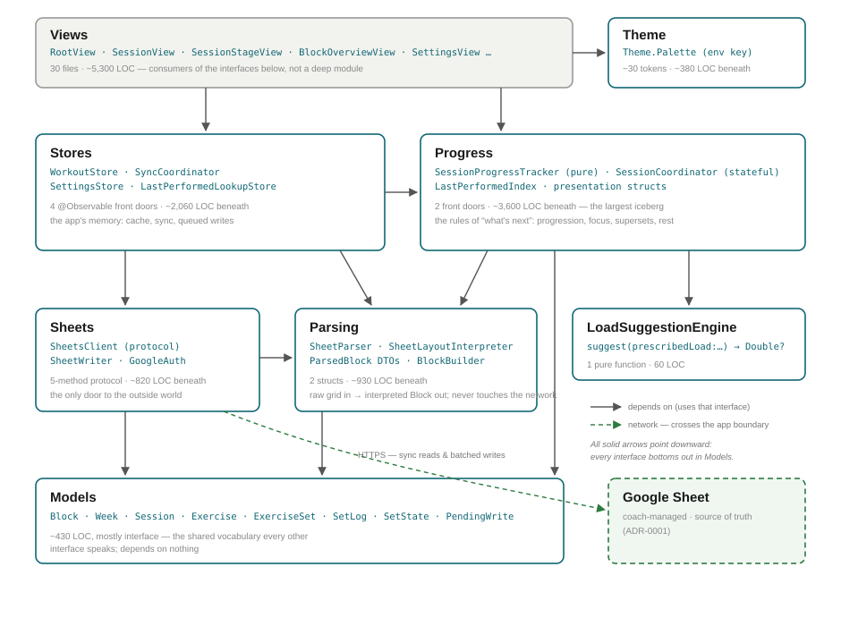

Every deep module in WorkoutTracker, its front door, and the contract a caller must know. Facts below carry file:line citations so drift is detectable. For the house vocabulary (module, interface, seam, depth…) see the glossary.

WorkoutTrackerApp wires four
@Observable stores into the SwiftUI environment and injects either
GoogleSheetsClient() or a fixture client
WorkoutTrackerApp.swift. The SPM library target excludes
Views/, LiveActivity/, and GoogleAuth.swift
Package.swift — so everything below the Views row is unit-testable
without SwiftUI.
Contract in one sentence: the domain types every other interface speaks; depends on nothing.
| Front door | What a caller must know |
|---|---|
Block → Week → Session → Exercise → ExerciseSetModels/Block.swift:5 · Models/Exercise.swift:8 |
SwiftData graph. Block.tabName is unique; training maxes live per Block
(squatTM/benchTM/deadliftTM). ExerciseSet.state is
.pending / .logged / .skipped. |
SetLog Models/SetLog.swift:20 |
The wire format: init?(formatted:) parses and formatted emits
"{weight}x{reps}@{RPE}" (weight is pounds or literal BW). This pair
is the contract between logging, Parsing, and Sheets. |
PendingWrite Models/PendingWrite.swift:25 |
A queued Sheet mutation (column .notes or .lastSetRPE; op
.upsert/.delete). Created by Stores, consumed by sync flush. |
LastPerformedEntry Models/LastPerformedEntry.swift:5 |
One row of the Last-Performed index (ADR-0002); unique on fullName, falls back
by baseName (cadence stripped). |
Contract in one sentence: give it a raw sheet snapshot, get back an interpreted Block plus warnings — pure, never touches the network.
| Front door | What a caller must know |
|---|---|
SheetParser.parse(snapshot:tabName:) → ParsedBlock
Parsing/SheetParser.swift:381 |
Returns plain DTOs (ParsedBlockModel, ParsedWeek…), not SwiftData
objects, plus human-readable warnings. BlockBuilder.makeBlock(from:)
bridges DTO → SwiftData Parsing/BlockBuilder.swift:3. |
SheetLayoutInterpreter.interpret(_:) → SheetLayout
Parsing/SheetLayoutInterpreter.swift:213 |
The ADR-0003 engine: no hardcoded cell positions. SheetLayout.week(number:) /
.day(week:day:) locate sections; SheetLayoutExerciseAnchor answers
write-targeting questions (visibleSetLogRow, prescriptionLines).
Shared by parsing and writing — one interpretation of the sheet, two uses. |
SheetSnapshot / SheetGrid
Parsing/SheetGrid.swift:3,19 |
Input types: a 2-D string grid plus row-visibility. Row visibility matters — Set Logs may only land on a Visible Writable Row. |
Contract in one sentence: five async methods are the only way bytes move between the app and Google.
| Front door | What a caller must know |
|---|---|
protocol SheetsClient: Sendable
Sheets/SheetsClient.swift:8
listTabTitles(spreadsheetId:) → [String] listSpreadsheets(pageToken:) → SpreadsheetListPage fetchTabSnapshot(spreadsheetId:tabName:) → SheetSnapshot updateCells(spreadsheetId:range:values:) updateCells(spreadsheetId:updates:) |
All async throws. Error mode: SheetsError
(.notAuthorized, .http(Int), .malformedResponse…).
This is the app's real seam: production adapter
GoogleSheetsClient, test adapters LocalWorkbookSheetsClient and
UITestFixture. GoogleSheetsClient.forCurrentEnvironment()
centralizes the live/fixture switch Sheets/GoogleSheetsClient.swift:86. |
SheetWriter / SheetWritePlanner
Sheets/SheetWriter.swift:101,130 |
Planner is pure: plan(_:in:) throws → SheetCellUpdate decides where
a Set Log lands (Coach Notes never overwritten — logs move to the next Visible Writable Row).
Writer performs the batched update (ADR-0006). Errors are user-facing:
SheetWriterError has seven descriptive cases. |
GoogleAuth Sheets/GoogleAuth.swift:5 |
@MainActor, excluded from the SPM target. accessToken() feeds
GoogleSheetsClient's injected tokenProvider closure. |
Contract in one sentence: observable state plus commands that mutate the local cache and queue Sheet writes; sync reconciles with the source of truth.
| Front door | What a caller must know |
|---|---|
WorkoutStore Stores/WorkoutStore.swift:17 |
Reads: block, displayedSession, currentSession,
openExercises, canMoveOn. Commands: show(week:day:),
moveOn(), and logging — log(_:as:), skip(_:),
deleteLog(for:) :309. Invariant: logging both updates
the cache and enqueues a PendingWrite — callers never write to the Sheet
directly. |
SyncCoordinator Stores/SyncCoordinator.swift:6 |
sync(spreadsheetId:) async → Bool is the full pull (flush → parse → rebuild →
index); flushPending(spreadsheetId:) pushes queued writes. Observable
state: .idle / .syncing / .offline / .pendingWrites(Int) /
.conflict([String]). Ordering invariant: flush happens before pull, so local logs are
never clobbered. |
SettingsStore Stores/SettingsStore.swift:26 |
Sign-in, spreadsheet selection (setSheetURL(_:) → Bool validates), appearance,
rest durations. isConfigured gates the whole app flow. |
LastPerformedLookupStore
Stores/LastPerformedLookupStore.swift:16 |
Exposes an immutable snapshot for instant Last-Performed lookups;
refresh() after ingest. Seam: LastPerformedLookupRefreshing. |
Contract in one sentence: pure progression math plus the active-session state machine; the largest implementation in the app behind two front doors.
| Front door | What a caller must know |
|---|---|
SessionProgressTracker
Progress/SessionProgressTracker.swift:23 |
Pure, stateless: currentSession(in:overrideOrder:),
nextSession(after:in:), openExercises(in:currentSession:),
tileState(for:currentSession:). Encodes the domain rules for Current Session,
Move On, and week boundaries — WorkoutStore delegates to it. |
SessionCoordinator
Progress/SessionCoordinator.swift:165 |
The active-set / rest / superset engine behind SessionView. Commands:
focus(on:), log(_:as:), skip(_:),
createSuperset(from:to:in:), handlePairingTap(on:in:);
renderItems(in:lastPerformedLookup:) returns the ordered
[SessionRenderItem] the view draws. Every collaborator is an injected protocol
with a Noop default (SessionLoggingAdapter, SessionSyncAdapter,
SessionLiveActivityAdapter, SessionTransitionClock)
SessionCoordinator.swift:5–26 — WorkoutStore is
retrofitted as the logging adapter. |
LastPerformedIndex / LastPerformedExtractor
Progress/LastPerformedIndex.swift:5 |
ADR-0002: lookup(exerciseName:baseName:) is the two-tier lookup (full name,
then cadence-stripped base name); ingest(_:) rebuilds from parsed blocks. |
| Module | Contract |
|---|---|
LoadSuggestionEngine LoadSuggestionEngine.swift:6 |
One pure function: suggest(prescribedLoad:previousSetWeight:trainingMax:) →
Double?. Understands "Drop N%" (needs previous set weight) and
"N%1RM" (needs Training Max); rounds to 2.5 lb; returns nil when it
can't help. Always overridable by the athlete. |
Theme Theme.swift:15 |
Theme.Palette reached via the themePalette environment key;
~30 named tokens plus layout constants. ADR-0004. |
LiveActivityController
LiveActivity/LiveActivityController.swift:7 |
start / update / end / refreshAuthorizationStatus over
WorkoutActivityAttributes.ContentState (defined in WorkoutShared,
shared with the widget extension). |
| ADR | Seam it documents |
|---|---|
| 0001 sheet-as-backend-local-first | Sheets ↔ Stores: Sheet is source of truth, app is a local-first cache. |
| 0002 last-performed-local-index | Progress ↔ Stores: the Last-Performed index and lookup snapshot. |
| 0003 dynamic-cell-targeting | Parsing: SheetLayoutInterpreter — no hardcoded cell positions, shared by read and write. |
| 0006 batched-pending-sheet-writes | Stores ↔ Sheets: PendingWrite queue and batched flush. |
| 0010 per-line-set-template | Parsing/Sheets: Prescription Lines and the set-slot model. |
| 0011 stage-session-view | Progress ↔ Views: SessionCoordinator's render-item interface. |